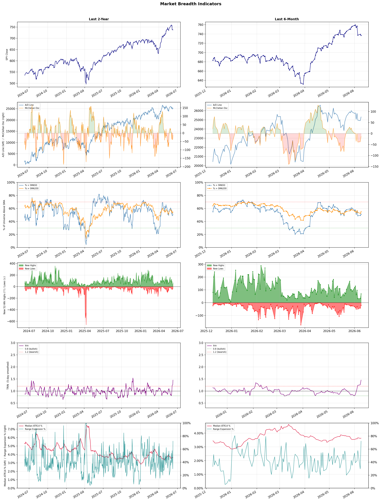

A daily research map of market breadth, industry rotation, and technical setups
| Item | Read |
|---|---|
| Regime | Selective Risk-On |
| Risk posture | Cautious |
| Indices | QQQ 707.83 (-1.2% today) |
| Universe | 1,701 stocks tracked · 69 new 52-week highs · 30 active swing setups |
| Breadth | 51.2% of tracked stocks are above SMA50 — neutral range, new highs exceed new lows (69 vs 20), McClellan oscillator (breadth momentum) is negative at -12.8 |
| Leadership | Trucking, Healthcare Plans, and REIT - Hotel & Motel |
| Weakest groups | Other Precious Metals & Mining, Gold, and Utilities - Independent Power Producers |
Use this report to prioritize research and chart review; validate entries, stops, liquidity, earnings, and risk before acting.
| Item | Read |
|---|---|
| Primary read | Selective Risk-On regime with Cautious risk posture. |
| Research queue | RXO, WERN, KNX, ODFL, XPO |
| Leadership focus | Trucking, Healthcare Plans, and REIT - Hotel & Motel |
| Caution list | Other Precious Metals & Mining, Gold, and Utilities - Independent Power Producers |
| Review prompt | Check extension risk, chart location, fundamentals, valuation, and earnings before using any research row. |
| Item | Read |
|---|---|
| Primary read | 3 active risk warnings; use screen output as watchlist input only. |
| Bullish screens | RXO, CNC, ELV, HUM, CDP |
| Bearish screens | DOX, BILL, GRAB, GTM |
| Alerts / levels | Automated trigger, stop, ATR, liquidity, reward/risk, and event-risk levels are pending future enrichment. |
| Review prompt | Open the linked chart, define trigger and invalidation, then check liquidity and event risk independently. |
Risk Posture: Cautious — screen backdrop is selective; prioritize research in top-ranked groups
Metric context: McClellan below -50 = elevated selling pressure; below -100 = washout territory. Range Expansion = share of stocks with daily range above their 20-day average. Signal Density = share of tracked names appearing in signal screens.
| Breadth Date | % > SMA50 | % > SMA200 | New Highs | New Lows | McClellan | Median Range | Avg Range | Median ATR14 | Range Expansion | Signal Density |
|---|---|---|---|---|---|---|---|---|---|---|
| 2026-06-09 | 51.2% | 54.9% | 69 | 20 | -12.8 | 3.9% | 5.1% | 3.6% | 72.3% | 7.8% |

Prior comparison date: June 8, 2026
| Metric | Prior | Current | Change |
|---|---|---|---|
| Regime | Neutral | Selective Risk-On | changed |
| Risk Posture | Cautious | Cautious | unchanged |
| % > SMA50 | 49.2% | 51.2% | +2.0 pts |
| % > SMA200 | 52.6% | 54.9% | +2.4 pts |
| New Highs | 33 | 69 | +36 |
| New Lows | 42 | 20 | +22 |
Top-10 industries entering: Diagnostics & Research, Footwear & Accessories, and Resorts & Casinos. Top-10 industries leaving: Communication Equipment, Electrical Equipment & Parts, and Solar. New multi-signal long setups: BNS, CNC, CROX, EWBC, EXPD, GEO, HSIC, HUM, MASI. New multi-signal short setups: BILL.
| Status | Tickers | Read |
|---|---|---|
| Added | BILL, BNS, CNC, CROX, EWBC, EXPD, GEO, HSIC | New technical screen matches vs prior report. |
| Removed | AUR, CRK, CSAN, DE, FCF, IMCR, LCID, LLY | No longer present in today's technical screen matches. |
| Still Active | BNL, CDP, CFFN, CPT, DOX, ELV, FBP, GRAB | Appeared in both current and prior reports. |
| Promoted | none | Model Screen Score improved by at least 15 points. |
| Downgraded | none | Model Screen Score declined by at least 15 points. |
| Direction | Industry | ETF | Prior Rank | Current Rank | Days | Rank Change |
|---|---|---|---|---|---|---|
| Rose | Diagnostics & Research | N/A | 96 | 8 | 42 | +88 |
| Rose | Footwear & Accessories | N/A | 87 | 9 | 28 | +78 |
| Rose | Residential Construction | ITB | 91 | 18 | 14 | +73 |
| Rose | Apparel Retail | XRT | 96 | 25 | 28 | +71 |
| Rose | Airlines | N/A | 82 | 16 | 42 | +66 |
Bull: The Diagnostics & Research sector is experiencing a rising relative strength primarily due to the increasing integration of advanced technologies, such as AI, in healthcare, which is highlighted by the U.S. News article on stocks to buy in 2026. Additionally, the positive momentum in the sector is reinforced by strong performance indicators, such as Agilent Technologies' projected 43.86% upside and Waters' recent 5.3% gain amid a sector-wide rally, suggesting robust investor confidence and growing demand for innovative diagnostic solutions. Furthermore, the emphasis on outpatient care, as noted by TradingView, reflects a broader shift in healthcare delivery that favors companies in this space.
Bear: While the bull thesis highlights positive trends in the Diagnostics & Research sector, it overlooks several critical headwinds that could dampen future growth. The integration of advanced technologies like AI, while promising, also invites increased competition and regulatory scrutiny, which can stifle innovation and profitability. Additionally, the emphasis on outpatient care may not translate into sustained revenue growth for all companies, particularly if economic pressures lead to tighter healthcare budgets and reduced spending on diagnostic services.
Verdict: The Diagnostics & Research sector is experiencing growth driven by the integration of advanced technologies like AI, which enhances diagnostic capabilities and aligns with the shift towards outpatient care, fostering investor confidence. However, key risks include increased competition and regulatory scrutiny that could hinder innovation and profitability, particularly if economic pressures lead to tighter healthcare budgets impacting spending on diagnostic services. Investors should monitor these dynamics closely while considering opportunities in companies demonstrating strong fundamentals and adaptability to market changes.
Sources: Google News
Bull: The Footwear & Accessories industry is experiencing a rise in relative strength due to strong consumer demand and positive market sentiment, as evidenced by recent headlines highlighting significant stock gains, such as Crocs' 6.7% jump amid a sector-wide rally. Additionally, reports from Yahoo Finance and TradingView indicate that several companies within the sector are well-positioned for growth, driven by robust retail performance and a favorable macroeconomic environment that encourages discretionary spending, particularly in apparel and accessories. This momentum is further supported by positive earnings reports, such as those from Columbia Sportswear, signaling strong financial health and consumer interest in the category.
Bear: While the Footwear & Accessories industry may currently exhibit rising relative strength and positive headlines, this momentum could be misleading as it often reflects short-term market enthusiasm rather than sustainable growth. Key headwinds such as potential inflationary pressures, rising production costs, and shifting consumer preferences towards value-oriented brands could undermine the sector’s long-term profitability. Additionally, the reliance on discretionary spending could be jeopardized by economic uncertainties, leading to decreased consumer confidence and spending in the apparel and accessories market.
Verdict: The Footwear & Accessories industry's rise is primarily driven by strong consumer demand and positive market sentiment, bolstered by robust retail performance and favorable macroeconomic conditions that encourage discretionary spending. However, investors should remain cautious of potential risks, including inflationary pressures and shifting consumer preferences towards value-oriented brands, which could undermine long-term profitability and consumer confidence in the sector.
Sources: Google News
Bull: The rising relative strength of the Residential Construction sector, as reflected in the ITB ETF, can largely be attributed to declining mortgage rates, which are making home financing more accessible and stimulating demand for new homes. Recent headlines highlight the positive impact of lower rates on home construction stocks, as evidenced by the sector-wide rally that includes significant gains for companies like Toll Brothers. Additionally, the perceived undervaluation of homebuilder stocks, bolstered by Berkshire Hathaway's endorsement, signals strong investor confidence and potential for robust growth in the sector.
Bear: While the recent decline in mortgage rates may provide a temporary boost to home construction stocks, the underlying fundamentals of the residential construction market remain concerning. Rising mortgage rates, now at their highest level since August, could quickly dampen demand as affordability continues to be a significant barrier for potential homebuyers. Furthermore, the endorsement from Berkshire Hathaway may not be a reliable indicator of long-term growth, as the sector faces persistent challenges such as labor shortages, supply chain disruptions, and potential economic headwinds that could undermine any short-term gains.
Verdict: The recent rally in the Residential Construction sector, as indicated by the ITB ETF, is primarily driven by declining mortgage rates that enhance affordability and stimulate demand for new homes. However, the key risk lies in the potential for rising mortgage rates to quickly reverse this trend, coupled with persistent challenges like labor shortages and supply chain disruptions that could hinder long-term growth. Investors should closely monitor interest rate trends and market fundamentals to assess the sustainability of this upward momentum.
Sources: Yahoo Finance, Google News
Bull: The Apparel Retail sector is experiencing a rising relative strength primarily due to improving consumer sentiment and increased spending, as indicated by the positive movement in exchange-traded funds and equity futures amid favorable inflation data. Additionally, the sector-wide rallies seen in companies like Boot Barn Holdings and Abercrombie & Fitch suggest a resurgence in consumer demand for apparel, likely driven by a rebound in discretionary spending as economic signals improve. This bullish trend is further supported by analysts highlighting well-positioned stocks for growth within the industry, reinforcing confidence in the sector's potential.
Bear: While the recent rallies in specific apparel stocks may suggest a temporary resurgence, the overall apparel retail sector faces significant headwinds, including persistent inflation pressures that could dampen consumer spending in the long run. Additionally, the mixed economic signals and volatility in equity futures indicate underlying uncertainty, suggesting that any optimism may be overblown and could lead to a correction as consumers prioritize essential goods over discretionary spending.
Verdict: The apparel retail sector's rising strength is fundamentally driven by improving consumer sentiment and increased discretionary spending, bolstered by favorable inflation data that enhances confidence in the market. However, the key risk lies in persistent inflation pressures and mixed economic signals, which could lead consumers to prioritize essential goods over discretionary purchases, potentially undermining the sector's growth trajectory. Investors should closely monitor inflation trends and consumer spending patterns to gauge the sustainability of this bullish momentum.
Sources: Yahoo Finance, Google News
Bull: The airline industry is experiencing a rising relative strength trend due to an overall recovery in travel demand and consumer spending, despite recent sector-wide profit warnings. The headlines indicate that while some airlines like Delta are facing short-term pressures, analysts from Zacks highlight the potential for rebound, suggesting that the long-term outlook remains positive as travel continues to normalize post-pandemic. Additionally, the mention of stocks to watch indicates that investors are beginning to identify opportunities within the sector, positioning themselves for future growth as operational efficiencies and capacity expansions take hold.
Bear: While the bull case highlights a rising trend in travel demand, the recent sector-wide profit warnings, particularly from major players like Delta, signal deeper underlying issues that could hinder long-term recovery. Increased operational costs, potential economic headwinds such as rising fuel prices and inflation, and the looming threat of recession may dampen consumer spending on travel, making it premature to assume that the current relative strength trend will translate into sustained profitability for airlines. Furthermore, the market's volatility and the potential for further disruptions—whether from geopolitical tensions or new COVID-19 variants—pose significant risks that could derail any anticipated rebound.
Verdict: The airline industry's rising trend is primarily driven by a rebound in travel demand and consumer spending as post-pandemic normalization takes hold, with analysts identifying potential for growth despite recent profit warnings. However, key risks remain, including rising operational costs, inflationary pressures, and potential economic downturns, which could undermine profitability and dampen consumer willingness to spend on travel. Investors should closely monitor these economic indicators and geopolitical developments to assess the sustainability of this upward trend.
Sources: Google News
| Direction | Industry | ETF | Prior Rank | Current Rank | Days | Rank Change |
|---|---|---|---|---|---|---|
| Fell | Oil & Gas Drilling | XES | 7 | 88 | 28 | -81 |
| Fell | Chemicals | N/A | 11 | 91 | 35 | -80 |
| Fell | Other Industrial Metals & Mining | N/A | 8 | 84 | 35 | -76 |
| Fell | Copper | COPX | 7 | 80 | 7 | -73 |
| Fell | Utilities - Regulated Gas | XLU | 21 | 93 | 42 | -72 |
Bear: While the bull analyst attributes the decline in the Oil & Gas Drilling sector's relative strength to market volatility and geopolitical tensions, it's crucial to recognize that the long-term outlook for the sector is increasingly clouded by structural challenges, including mounting regulatory pressures, a global shift towards renewable energy, and significant capital discipline from oil companies that may limit exploration and production growth. Furthermore, the recent headlines highlighting alternative investments suggest that investor sentiment is shifting away from traditional oil and gas, indicating a potential long-term decline in demand for drilling services as the energy landscape evolves.
Bull: The Oil & Gas Drilling sector, represented by the SPDR S&P Oil & Gas Equipment & Services ETF (XES), is experiencing a decline in relative strength primarily due to market volatility and geopolitical tensions, as highlighted by the recent surge in oil prices driven by Middle East news. Additionally, the headlines suggest a shift in investor focus towards alternative energy sources and other sectors, as seen in discussions about ETFs that benefit from oil price surges without direct investment, indicating a potential diversion of capital away from traditional oil and gas drilling investments.
Verdict: The Oil & Gas Drilling sector is experiencing a decline due to a combination of market volatility and shifting investor sentiment towards alternative energy sources, exacerbated by geopolitical tensions affecting oil prices. The key risk from the bear case is the long-term structural challenges posed by increasing regulatory pressures and a global transition to renewable energy, which could further diminish demand for traditional drilling services. Investors should closely monitor these trends and consider diversifying their portfolios to include renewable energy investments to mitigate potential losses in the oil and gas sector.
Sources: Yahoo Finance, Google News
Bear: While the bull analyst attributes the Chemicals sector's relative weakness to broader market pressures and geopolitical factors, this overlooks fundamental issues such as rising input costs, regulatory challenges, and potential overcapacity in certain chemical segments. Additionally, the focus on Ineos's investment may be misleading, as it could indicate a desperate attempt to consolidate in a struggling market rather than a sign of robust sector health. The falling relative strength trend suggests that investors are losing confidence in the sector's ability to generate sustainable growth, raising concerns about long-term profitability amidst increasing competition and market volatility.
Bull: The Chemicals sector is experiencing a decline in relative strength primarily due to broader market pressures, as indicated by the Morningstar headline highlighting the sector's performance amidst a soaring basic materials sector. Additionally, geopolitical factors, such as the impact of the Iran war on petrochemical competitors, may be creating volatility and uncertainty within the industry, leading to underperformance relative to other sectors. Furthermore, the mention of Ineos's significant investment suggests a strategic shift that could be overshadowed by current market dynamics, contributing to the overall perception of weakness in the Chemicals sector.
Verdict: The Chemicals sector's decline appears driven by a combination of rising input costs, regulatory challenges, and potential overcapacity, which are undermining investor confidence and long-term profitability. While geopolitical factors and broader market pressures contribute to the sector's underperformance, the key risk highlighted by the bear case is the possibility that Ineos's significant investment may signal desperation rather than a recovery strategy, suggesting that the sector may struggle to achieve sustainable growth in the face of increasing competition and market volatility. Investors should closely monitor these fundamental issues and consider reallocating resources to sectors with stronger growth prospects.
Sources: Google News
Bear: While the bull analyst points to macroeconomic factors and a shift towards innovative sectors as reasons for the relative weakness in the Other Industrial Metals & Mining sector, it is crucial to recognize that this sector is facing significant headwinds, including rising production costs, regulatory pressures, and potential supply chain disruptions. Additionally, the growing focus on AI and advanced technologies may lead to increased competition, as traditional players struggle to adapt, potentially exacerbating the decline in investor confidence and capital allocation away from these conventional mining stocks.
Bull: The relative weakness in the Other Industrial Metals & Mining sector can be attributed to a combination of macroeconomic factors and shifting investor sentiment towards more innovative sectors, as highlighted by recent headlines focusing on AI-powered advancements in mining and strong performance in the broader metals sector. The emphasis on top stock picks in the red-hot metals sector suggests a rotation of capital towards companies that are perceived as having better growth potential, while the focus on ETFs and investment strategies for 2026 indicates a cautious outlook for traditional industrial metals, potentially leading to reduced investor interest in the Other Industrial Metals & Mining segment.
Verdict: The Other Industrial Metals & Mining sector is experiencing a decline primarily due to macroeconomic headwinds, rising production costs, and shifting investor focus towards more innovative sectors like AI, which are perceived to offer better growth potential. A key risk from the bear case is the potential for escalating regulatory pressures and supply chain disruptions, which could further erode investor confidence and exacerbate capital flight from traditional mining stocks. Investors should closely monitor these dynamics and consider reallocating capital towards sectors with more robust growth prospects while remaining cautious of the challenges facing the industrial metals space.
Sources: Google News
Bear: While the bull analyst highlights concerns about global manufacturing and a potential shift toward alternative investments, the reality is that copper's demand fundamentals remain precarious. The recent headlines indicate a growing skepticism about copper's role in the AI and renewable energy sectors, suggesting that any anticipated surge in demand may not materialize as quickly as expected. Furthermore, with rising interest rates and inflationary pressures, industrial activity could slow down significantly, exacerbating the downward trend in copper prices and investor sentiment.
Bull: Copper's relative strength is likely falling due to concerns about a potential slowdown in global manufacturing, as highlighted in the recent headline discussing the implications for copper ETFs if manufacturing weakens. Additionally, the focus on alternative investments, such as AI and renewable energy, may divert attention and capital away from copper, despite its critical role in these sectors, as indicated in the themes driving current market trends. This shift in investor sentiment, combined with macroeconomic uncertainties, is contributing to the relative underperformance of copper compared to other industries.
Verdict: The copper industry is experiencing a downward trend primarily due to concerns over a slowdown in global manufacturing, which is dampening demand fundamentals. Additionally, rising interest rates and inflationary pressures pose a significant risk, as they could further suppress industrial activity and investor sentiment. Investors should closely monitor macroeconomic indicators and shifts in demand forecasts to navigate potential volatility in copper prices.
Sources: Yahoo Finance, Google News
Bear: While the bull analyst attributes the relative weakness in the Utilities - Regulated Gas sector to market dynamics and potential regulatory changes, it is crucial to consider the fundamental challenges facing the sector itself. Rising interest rates, driven by the Fed's inflation-fighting measures, could significantly increase borrowing costs for utilities, squeezing margins and limiting capital expenditure on infrastructure improvements. Furthermore, the ongoing shift towards renewable energy and decarbonization efforts may impose additional regulatory burdens and capital requirements on traditional gas utilities, potentially leading to long-term declines in profitability and investor confidence.
Bull: The relative weakness in the Utilities - Regulated Gas sector can be attributed to the broader market's focus on technology and growth sectors, as highlighted by the headline about diversifying away from tech-heavy portfolios. Additionally, the anticipated regulatory changes from PJM’s March 2027 Data Center Framework Decision may create uncertainty for utility investors, further dampening sentiment. As the Federal Reserve pivots to combat inflation, the potential for rising interest rates could also pressure utility stocks, which are typically sensitive to changes in interest rates due to their capital-intensive nature.
Verdict: The Utilities - Regulated Gas sector is experiencing weakness primarily due to rising interest rates, which increase borrowing costs and pressure profit margins, coupled with the ongoing transition toward renewable energy that may impose additional regulatory and capital burdens on traditional gas utilities. Investors should be cautious, as the bear case highlights the risk of declining profitability and investor confidence amid these fundamental challenges, suggesting a need for careful evaluation of utility investments in the current economic climate.
Sources: Yahoo Finance, Google News
| Industry | Rank | ETF | 7d | 14d | 28d | 42d | Chg 42d | Size | 20D | 60D | Composite | Active Setups |
|---|---|---|---|---|---|---|---|---|---|---|---|---|
| Trucking | 1 | IYT | 5 | 10 | 24 | 3 | +2 | 5 | 26.7% | 63.1% | 0.982 | 2 |
| Healthcare Plans | 2 | IHF | 13 | 11 | 4 | 9 | +7 | 11 | 15.4% | 60.1% | 0.957 | 2 |
| REIT - Hotel & Motel | 3 | XLRE | 11 | 7 | 15 | 14 | +11 | 7 | 17.0% | 36.3% | 0.947 | 1 |
| Electronic Components | 4 | XLK | 4 | 8 | 8 | 6 | +2 | 9 | 9.9% | 55.0% | 0.899 | 1 |
| REIT - Office | 5 | XLRE | 15 | 17 | 19 | 37 | +32 | 10 | 12.2% | 26.5% | 0.891 | 2 |
| Computer Hardware | 6 | XLK | 2 | 2 | 2 | 4 | -2 | 14 | 7.1% | 57.1% | 0.890 | 1 |
| Semiconductors | 7 | SOXX | 1 | 1 | 1 | 1 | -6 | 36 | 6.4% | 91.5% | 0.880 | 2 |
| Diagnostics & Research | 8 | N/A | 26 | 46 | 72 | 96 | +88 | 21 | 18.5% | 22.0% | 0.844 | 3 |
| Footwear & Accessories | 9 | N/A | 22 | 28 | 87 | 67 | +58 | 7 | 14.0% | 18.5% | 0.818 | 2 |
| Resorts & Casinos | 10 | N/A | 16 | 55 | 61 | 19 | +9 | 7 | 13.2% | 16.6% | 0.816 | 1 |
Rank columns (7d–42d) show the industry's rank that many trading days ago — lower is stronger. Chg 42d = rank change vs 42 trading days ago — positive means the industry moved up. 20D and 60D are the mean stock return within the industry over that period. Active Setups: count of today's swing-trade candidates from this industry appearing across all signal screens.
| Industry | Rank | ETF | 7d | 14d | 28d | 42d | Chg 42d | Size | 20D | 60D | Composite | Active Setups |
|---|---|---|---|---|---|---|---|---|---|---|---|---|
| Other Precious Metals & Mining | 98 | N/A | 56 | 69 | 40 | 84 | -14 | 5 | -26.0% | -20.3% | 0.053 | 1 |
| Gold | 97 | GDX | 66 | 80 | 67 | 83 | -14 | 31 | -22.3% | -19.8% | 0.068 | 1 |
| Utilities - Independent Power Producers | 96 | XLU | 68 | 75 | 79 | 49 | -47 | 5 | -11.1% | -8.5% | 0.071 | 0 |
| Uranium | 95 | URA | 42 | 95 | 27 | 62 | -33 | 6 | -26.1% | -19.2% | 0.083 | 0 |
| Agricultural Inputs | 94 | N/A | 87 | 79 | 62 | 80 | -14 | 7 | -8.3% | -12.1% | 0.111 | 2 |
| Utilities - Regulated Gas | 93 | XLU | 94 | 68 | 65 | 21 | -72 | 6 | -5.0% | -4.4% | 0.183 | 1 |
| Financial Data & Stock Exchanges | 92 | N/A | 96 | 77 | 59 | 91 | -1 | 7 | -6.8% | -6.0% | 0.186 | 0 |
| Chemicals | 91 | N/A | 64 | 52 | 12 | 32 | -59 | 9 | -12.8% | -3.5% | 0.204 | 1 |
| REIT - Mortgage | 90 | N/A | 91 | 93 | 80 | 65 | -25 | 15 | -4.1% | -1.1% | 0.210 | 1 |
| Information Technology Services | 89 | XLK | 61 | 81 | 93 | 94 | +5 | 31 | -2.9% | -6.2% | 0.214 | 3 |
Rank columns (7d–42d) show the industry's rank that many trading days ago — lower is stronger. Chg 42d = rank change vs 42 trading days ago — positive means the industry moved up. 20D and 60D are the mean stock return within the industry over that period. Active Setups: count of today's swing-trade candidates from this industry appearing across all signal screens.
These are research candidates from top-ranked stocks, capped at five names per industry to avoid over-concentration. Returns shown (60D, 120D, 250D) are historical — they reflect where prices have already moved, not forward expectations. Extension Risk flags names that may require extra patience or a better entry point. They are not buy signals.
Chart: TV = TradingView chart (opens in browser); PDF = local chart file (if downloaded).
| Ticker | Name | Industry | Industry Rank | Market Cap | 60D Hist | 120D Hist | 250D Hist | Extension Risk | Research Reason | Chart |
|---|---|---|---|---|---|---|---|---|---|---|
| RXO | RXO Inc | Trucking | 1 | 2.3B | 140.3% | 94.1% | 76.5% | Very extended | Top-ranked in industry; very extended | TV |
| WERN | Werner Enterprises | Trucking | 1 | 1.8B | 57.5% | 41.8% | 54.5% | Extended | Top-ranked in industry; extended | TV |
| KNX | Knight-Swift Transportation | Trucking | 1 | 9.2B | 54.7% | 51.0% | 77.5% | Extended | Top-ranked in industry; extended | TV |
| ODFL | Old Dominion Freight Line | Trucking | 1 | 40.4B | 37.6% | 58.0% | 48.2% | Constructive | Top-ranked in industry | TV |
| XPO | XPO | Trucking | 1 | 22.1B | 25.2% | 55.2% | 84.2% | Constructive | Top-ranked in industry | TV |
| HUM | Humana | Healthcare Plans | 2 | 21.6B | 119.5% | 32.2% | 56.6% | Very extended | Top-ranked in industry; very extended | TV |
| CLOV | Clover Health | Healthcare Plans | 2 | 1.0B | 116.7% | 63.7% | 43.5% | Very extended | Top-ranked in industry; very extended | TV |
| OSCR | Oscar Health | Healthcare Plans | 2 | 4.1B | 105.7% | 68.6% | 85.3% | Very extended | Top-ranked in industry; very extended | TV |
| CNC | Centene | Healthcare Plans | 2 | 21.5B | 92.2% | 63.7% | 19.3% | Extended | Top-ranked in industry; extended | TV |
| PGNY | Progyny | Healthcare Plans | 2 | 1.5B | 47.6% | -1.9% | 15.2% | Constructive | Top-ranked in industry | TV |
| PEB | Pebblebrook Hotel Trust | REIT - Hotel & Motel | 3 | 1.5B | 47.7% | 47.2% | 74.2% | Constructive | Top-ranked in industry | TV |
| RLJ | RLJ Lodging Trust | REIT - Hotel & Motel | 3 | 1.2B | 42.9% | 37.4% | 43.3% | Constructive | Top-ranked in industry | TV |
| PK | Park Hotels & Resorts Inc | REIT - Hotel & Motel | 3 | 2.2B | 38.9% | 28.5% | 33.2% | Constructive | Top-ranked in industry | TV |
| APLE | Apple Hospitality REIT Inc | REIT - Hotel & Motel | 3 | 2.9B | 36.2% | 29.5% | 34.1% | Constructive | Top-ranked in industry | TV |
| SHO | Sunstone Hotel Investors Inc | REIT - Hotel & Motel | 3 | 1.8B | 29.7% | 24.8% | 27.4% | Constructive | Top-ranked in industry | TV |
| TTMI | TTM Technologies | Electronic Components | 4 | 9.1B | 91.8% | 141.3% | 380.4% | Extended | Top-ranked in industry; extended | TV |
| OUST | Ouster | Electronic Components | 4 | 1.3B | 79.4% | 74.4% | 140.3% | Extended | Top-ranked in industry; extended | TV |
| RAL | Ralliant | Electronic Components | 4 | 5.0B | 50.7% | 25.6% | 34.3% | Extended | Top-ranked in industry; extended | TV |
| APH | Amphenol | Electronic Components | 4 | 162.1B | 15.0% | 18.6% | 66.6% | Constructive | Top-ranked in industry | TV |
| TEL | TE Connectivity | Electronic Components | 4 | 60.4B | 5.8% | -8.6% | 26.8% | Constructive | Top-ranked in industry | TV |
These are technical screen matches from existing signal files. They are not trade recommendations. Trigger, stop, ATR, liquidity, reward/risk, and event risk still require separate validation until those inputs are available.
Model Screen Score is weighted by signal count, industry rank, freshness, and setup type. It is not a probability of profit, expected return, or suitability rating. Industry cap: max 3 candidates per industry.
Signal glossary: Momentum Pullback = stock in an uptrend that has pulled back 10–30% and shows re-entry conditions. MA Compression = short- and long-term moving averages converging, often preceding a directional move. Three-Day Up/Down = three consecutive closes in the same direction. New 52Wk High/Low = price reached a new annual extreme.
Chart: TV = TradingView chart (opens in browser); PDF = local chart file (if downloaded).
| Ticker | Industry | Setups | Close | Industry Rank | Signal Count | Model Screen Score | Reason | Chart |
|---|---|---|---|---|---|---|---|---|
| RXO | Trucking | New 52Wk High; Three-Day Up | 29.12 | 1 | 2 | 100 | Multi-signal; top industry breakout | TV |
| CNC | Healthcare Plans | New 52Wk High; Three-Day Up | 66.21 | 2 | 2 | 100 | Multi-signal; top industry breakout | TV |
| ELV | Healthcare Plans | New 52Wk High; Three-Day Up | 424.43 | 2 | 2 | 100 | Multi-signal; top industry breakout | TV |
| HUM | Healthcare Plans | New 52Wk High; Three-Day Up | 363.18 | 2 | 2 | 100 | Multi-signal; top industry breakout | TV |
| CDP | REIT - Office | New 52Wk High; Three-Day Up | 34.12 | 5 | 2 | 93 | Multi-signal; top industry breakout | TV |
| CROX | Footwear & Accessories | New 52Wk High; Three-Day Up | 127.77 | 9 | 2 | 85 | Multi-signal; top industry breakout | TV |
| EXPD | Integrated Freight & Logistics | New 52Wk High; Three-Day Up | 166.34 | 12 | 2 | 85 | Multi-signal; new-high strength | TV |
| BNS | Banks - Diversified | New 52Wk High; Three-Day Up | 81.70 | 14 | 2 | 85 | Multi-signal; new-high strength | TV |
| RY | Banks - Diversified | New 52Wk High; Three-Day Up | 197.89 | 14 | 2 | 85 | Multi-signal; new-high strength | TV |
| MXL | Semiconductors | Momentum Pullback | 72.61 | 7 | 2 | 78 | Multi-signal; top industry pullback | TV |
| NNN | REIT - Retail | MA Compression; New 52Wk High | 45.99 | 32 | 2 | 75 | Multi-signal; new-high strength | TV |
| CPT | REIT - Residential | MA Compression; Three-Day Up | 115.40 | 22 | 2 | 72 | Multi-signal; compression setup | TV |
| SEM | Medical Care Facilities | New 52Wk High; Three-Day Up | 16.63 | 27 | 2 | 70 | Multi-signal; new-high strength | TV |
| CFFN | Banks - Regional | New 52Wk High; Three-Day Up | 7.96 | 29 | 2 | 70 | Multi-signal; new-high strength | TV |
| EWBC | Banks - Regional | New 52Wk High; Three-Day Up | 128.66 | 29 | 2 | 70 | Multi-signal; new-high strength | TV |
| FBP | Banks - Regional | New 52Wk High; Three-Day Up | 24.75 | 29 | 2 | 70 | Multi-signal; new-high strength | TV |
| KRG | REIT - Retail | New 52Wk High; Three-Day Up | 28.70 | 32 | 2 | 70 | Multi-signal; new-high strength | TV |
| UNM | Insurance - Life | New 52Wk High; Three-Day Up | 88.00 | 38 | 2 | 70 | Multi-signal; new-high strength | TV |
| MASI | Medical Devices | New 52Wk High; Three-Day Up | 179.95 | 40 | 2 | 70 | Multi-signal; new-high strength | TV |
| WST | Medical Instruments & Supplies | New 52Wk High; Three-Day Up | 334.66 | 45 | 2 | 65 | Multi-signal; new-high strength | TV |
| TNGX | Biotechnology | New 52Wk High; Three-Day Up | 31.56 | 46 | 2 | 65 | Multi-signal; new-high strength | TV |
| TVTX | Biotechnology | New 52Wk High; Three-Day Up | 48.57 | 46 | 2 | 65 | Multi-signal; new-high strength | TV |
| TKR | Tools & Accessories | New 52Wk High; Three-Day Up | 137.09 | 51 | 2 | 65 | Multi-signal; new-high strength | TV |
| BNL | REIT - Diversified | New 52Wk High; Three-Day Up | 20.94 | N/A | 2 | 45 | Multi-signal; new-high strength | TV |
| GEO | Security & Protection Services | New 52Wk High; Three-Day Up | 27.03 | N/A | 2 | 45 | Multi-signal; new-high strength | TV |
| HSIC | Medical Distribution | MA Compression; Three-Day Up | 80.03 | N/A | 2 | 40 | Multi-signal; compression setup | TV |
Bearish setups — stocks making new lows or showing persistent downside patterns. Validate carefully before acting.
| Ticker | Industry | Setups | Close | Industry Rank | Signal Count | Model Screen Score | Reason | Chart |
|---|---|---|---|---|---|---|---|---|
| DOX | Software - Infrastructure | New 52Wk Low; Three-Day Down | 57.98 | 21 | 2 | 47 | Multi-signal; new-low weakness | TV |
| BILL | Software - Application | New 52Wk Low; Three-Day Down | 34.09 | 59 | 2 | 35 | Multi-signal; new-low weakness | TV |
| GRAB | Software - Application | New 52Wk Low; Three-Day Down | 3.30 | 59 | 2 | 35 | Multi-signal; new-low weakness | TV |
| GTM | Software - Application | New 52Wk Low; Three-Day Down | 2.77 | 59 | 2 | 35 | Multi-signal; new-low weakness | TV |
How To Use This Report
| Use | Purpose |
|---|---|
| Market map | Start with breadth, regime, risk warnings, and what changed since the prior report. |
| Industry scan | Use leading, deteriorating, rising, and declining industries to focus research. |
| Research queue | Treat long-term candidates as names for deeper fundamental, valuation, and chart review. |
| Technical review | Treat bullish and bearish screen matches as watchlist inputs that require independent trigger, stop, liquidity, and event-risk checks. |
| Source follow-up | Use chart links and source files to verify raw inputs before relying on any row. |
What This Report Is Not
| Not | Meaning |
|---|---|
| Investment advice | The report does not evaluate personal objectives, risk tolerance, tax situation, account type, or suitability. |
| Buy/sell recommendation | Named tickers are research candidates or screen matches, not recommendations to transact. |
| Price target | The report does not provide fair value estimates, targets, or expected returns. |
| Trade plan | Trigger, stop, sizing, reward/risk, liquidity, and event-risk review remain separate user work. |
| Performance claim | Model Screen Score is not validated historical performance or a forecast of future results. |
| Item | Note |
|---|---|
| Version | Daily Report Methodology v1 |
| Model Screen Score | Screen-fit rank based on signal count, industry rank, freshness, and setup type. |
| Not predictive proof | The score is not expected return, probability of profit, historical validation, or suitability analysis. |
| Industry ranks | Composite industry ranks use existing daily ranking outputs and historical rank columns when available. |
| Research candidates | Long-term rows are research candidates from ranked stocks and leading industries, with historical returns labeled as historical only. |
| Technical matches | Bullish and bearish rows are screen matches requiring independent chart, trigger, stop, liquidity, and event-risk review. |
| Source | Status | Rows | Path |
|---|---|---|---|
| Market breadth | present | 1254 | breadth_20260609.csv |
| Industry composite rankings | present | 98 | all_industry_composite_20260609.csv |
| Top ranked stocks | present | 127 | top_ranked_composite_20260609.csv |
| All ranked stocks | present | 1701 | all_stocks_composite_sorted_20260609.csv |
| Top momentum pullbacks | present | 1800 | top_momentum_pullbacks_20260609.csv |
| MA compression | present | 1800 | ma_compression_stocks_20260609.csv |
| Three-day up/down | present | 197 | three_day_up_down_stocks_20260609.csv |
| New 52-week members | present | 89 | breadth_new_52wk_members_20260609.csv |
This report is generated from automated technical screens and is for informational and research purposes only. It is not investment advice, a solicitation, or a recommendation to buy or sell any security. Past performance is not indicative of future results. You are solely responsible for your own investment decisions. Consult a licensed financial advisor before acting on any information herein.